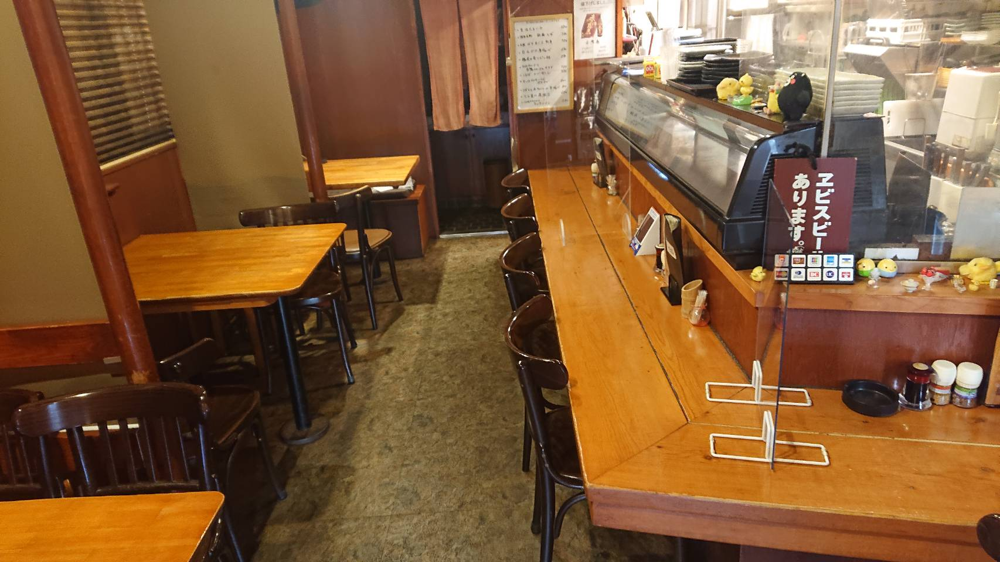

鳥取県の豊かな自然で育った「大山鶏」を使用。絶妙な火入れで焼き上げる13種類の焼き鳥は、外はパリッと、中はジューシーな旨味が溢れます。
焼き鳥屋ながら鮮魚にもこだわりあり。基本的に旬の天然物を揃えています。

“おいしい焼き鳥とうまい酒で、明日への活力に”
喜作は、部室のように同じ趣味の人たちが集まれる、温かい憩いの空間を目指しています。お一人様でカウンターで静かに飲むのもよし、仲間と賑やかに語らうのもよし。日常の喧騒を離れ、心ゆくまでお寛ぎください。
| 店舗名 | THE やきとり 喜作（ザヤキトリキサク） |
|---|---|
| 所在地 | 〒212-0058 神奈川県川崎市幸区鹿島田1-7-22 |
| 電話番号 | 044-555-5823 |
| アクセス |
JR横須賀線「新川崎駅」より徒歩3分 JR南武線「鹿島田駅」より徒歩3分 |
| 営業時間 |
火〜金：11:45～14:00 / 18:00～23:00 土・日：18:00～23:00 |
| 定休日 | 月曜日 |
| 駐車場 | なし |